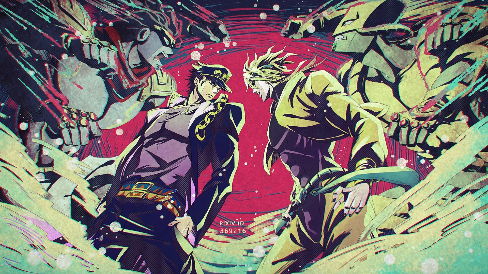
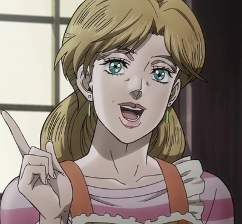
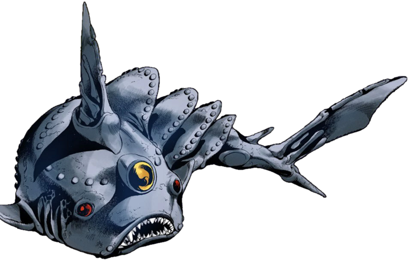
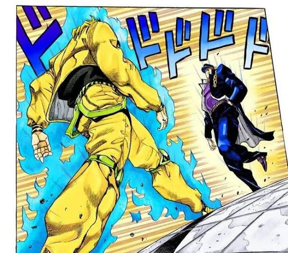
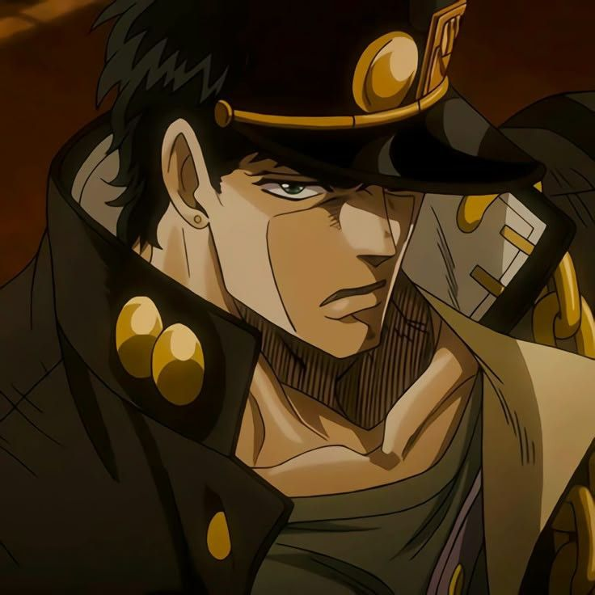
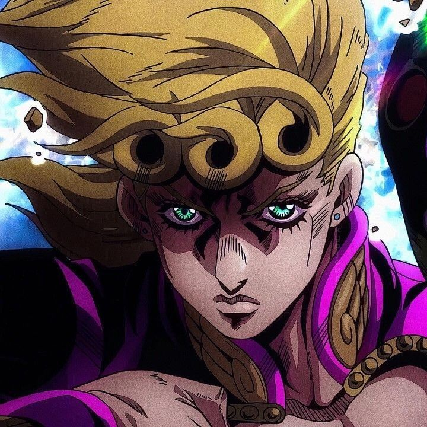
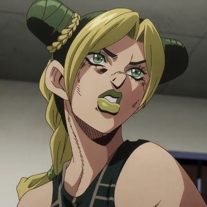
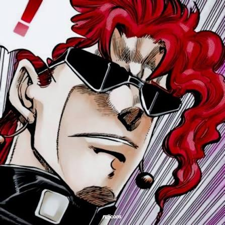

Jojo's Bizarre adventure

Sobre a série
JoJo's Bizarre Adventure é um dos mangás e animes mais influentes e duradouros do mundo. Criada por Hirohiko Araki em 1987, a obra é famosa por seu estilo visual extravagante, poses dramáticas, referências à música pop ocidental e batalhas intensas baseadas em pura estratégia.A grande marca da franquia é a sua estrutura dividida em partes independentes. Cada fase conta a história de um membro diferente da linhagem Joestar (todos apelidados de "JoJo"), em diferentes épocas e locais do mundo.
Personagens principais
- Jonathan Joestar
- Joseph Joestar
- Jotaro kujo
- Josuke Higashikata
- Giorno Giovanna
- Jolyne Cujoh
- Johnny Joestar
Partes
- Jojo: Phantom Blood
- Jojo: Battle Tendency
- Jojo: Stardust Crusaders
- Jojo: Diamond is Unbreakable
- Jojo: Golden Wind
- Jojo: Stone Ocean
- Jojo: Steel Ball Run
Conhecendo os Personagens
- Jonathan Joestar
- O primeiro JoJo, um jovem nobre britânico com um forte senso de justiça, que luta contra seu irmão adotivo Dio Brando usando a técnica do Hamon.
- Dio brando
- é o vilão principal e mais icônico de JoJo's Bizarre Adventure, servindo como o catalisador de quase todos os eventos da franquia.
- Jotaro Kujo
- Jotaro Kujo – Neto de Joseph, o JoJo mais famoso e durão, famoso por introduzir os poderes de Stand (com seu icônico Star Platinum) na jornada ao Egito.
Coisas que o Jotaro gosta
- Comida da Mamãe

- Biologia marinha

- Beber chá
- Bater no dio

Personagens favoritos.😍




